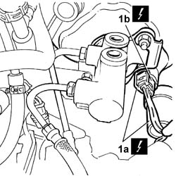
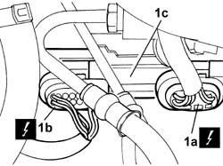

5580A88 WIRING between BRAKING SYSTEM CHECK CONTROL UNIT and ACTUATOR on brake servo - R.R.
- Path
- Procedures > 55 ELECTRICAL EQUIPMENT > 5580 SPECIAL ACCESSORIES > 5580A CRUISE CONTROL SYSTEM > 5580A88 WIRING between BRAKING SYSTEM CHECK CONTROL UNIT and ACTUATOR on brake servo - R.R.
- Kind
- repair procedure (removal / refitting; the operation number is the code)
- Applies to
- all engines; all production periods
- Interactive page
- https://sloeber94.github.io/elrnDB-lThss/en/#/193024
Applies to: all engines; all production periods
 Removing
Removing
 Refitting
Refitting- Open the boot, remove the cover on the left hand side and disconnect the negative battery lead.
See in Op. 1048A28
1. Disconnect the electrical connections at the brake servo for the diaphragm position sensor (1a) for the brake servo actuator (1b).

Applies to: all engines; all production periods
1. Disconnect the connectors (1a) and (1b) for the braking system check control unit (1c) and remove the wiring.
 | Description | Connector |
|---|---|---|
1a | Braking system check control unit (NBA brake assistance) | M052 |
| Description | Connector |
|---|---|---|
1b | Braking system check control unit (NBA brake assistance) | M052 |

Applies to: all engines; all production periods
Refitting
Removing- Position the wiring and connect the connectors and the braking system check control unit and remove the actual control unit.
| Description | Connector |
|---|---|---|
1a | Braking system check control unit (NBA brake assistance) | M052 |
| Description | Connector |
|---|---|---|
1b | Braking system check control unit (NBA brake assistance) | M052 |
- Disconnect the electrical connections at the brake servo for the diaphragm position sensor (2a) for the brake servo actuator (2b).
See in Op. 1048A28
- Connect the negative battery terminal and position the cover on the left hand side of the luggage compartment.